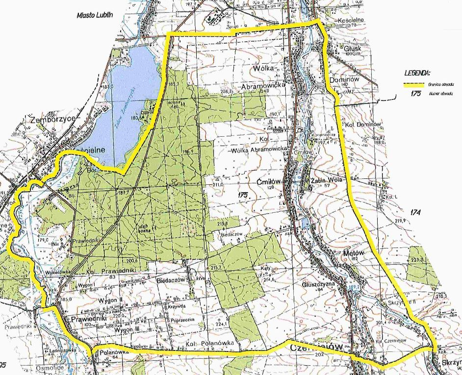
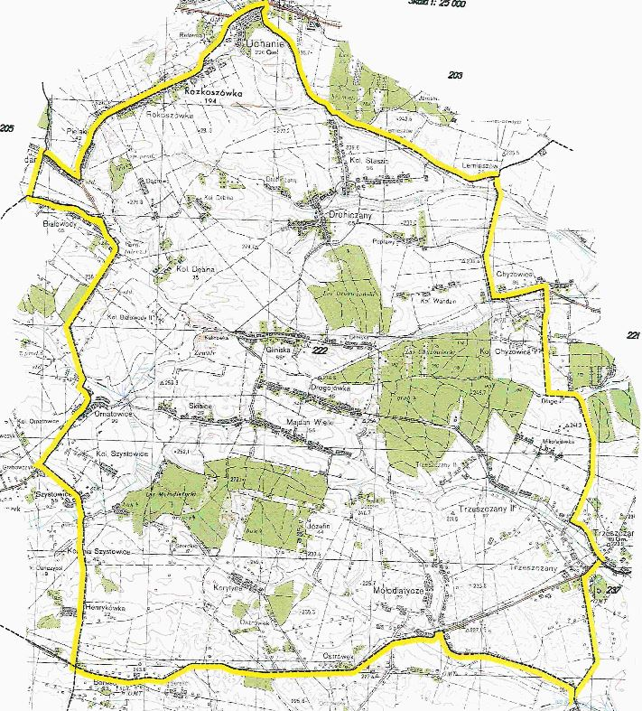
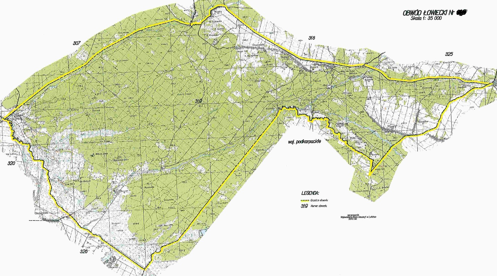

Obwód 175

Od wschodu od granicy w m. Lublin-Abramowice Kościelne
drogą przez m. Głusk do m. Skrzynice, dalej drogą przez m. Polanówka
do m. Prawiedniki, z m. Prawiedniki do nurtu rz. Bystrzyca i dalej
nurtem tej rzeki do granicy Zalewu Zemborzyckiego i
południową granicą Zalewu, duktą leśną lasu Dąbrowa
dochodząca do parkingu leśnego przy ul. Osmolickiej i dalej tą ulicą
do ul. Żeglarskiej. Następnie w
kierunku wschodnim ulicami Żeglarską i Powojową do m.
Lublin-Abramowice Kościelne.Włącza się do obwodu łowieckiego część
terenów administracyjnych miasta Lublin zgodnie z wyrysem graficznym.
Obwód 225

Od wschodu z m. Chyżowice drogą przez m. Długie,
Trzeszczany, Bogucice, z m. Bogucice szosą do m. Mołodiatycze. Z m.
Mołodiatycze przez m. Ostrówek, Bereść. Z m. Bereść drogą i szosą
przez m. Henrykówka, Kol. Szystowice, Ornatowice, obok m. Białowody,
Pielaki, Rozkoszówka do m. Uchanie. Z m. Uchanie drogą i szosą w
kierunku m. Kol. Staszic obok m. Kol. Staszic do m. Lemieszów, dalej
drogą do m. Chyżowice.
Obwód 326,327

Od wschodu z m. Maziły torem kolejowym do granicy
województwa i granicą województwa przez m. Paary, Banachy, Rebizanty,
dalej granicą województwa aż do punktu 205.8. Stąd granicą lasu -
zachodnią ścianą obrębu nr 2 Nadleśnictwa Narol aż do
granicy województwa i rzeki Paucza. Dalej rzeką Paucza do rzeki Wirowa
dalej rzeką Wirowa do nurtu rzeki Tanew. Dalej Nurtem rzeki Tanew do
m. Osuchy Z m. Osuchy drogą obok punktu 214.4, przez m Wierzchowina,
Nowiny do toru kolejowego i torem kolejowym przez m. Skwarki do m.
Maziły.